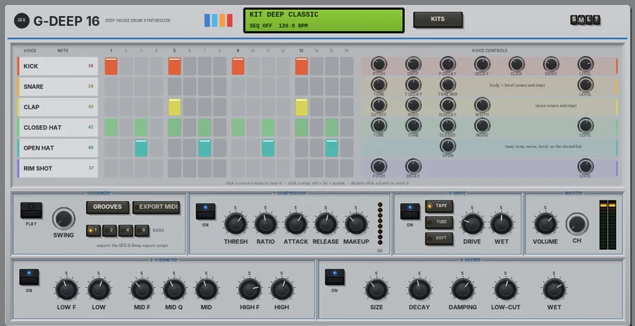
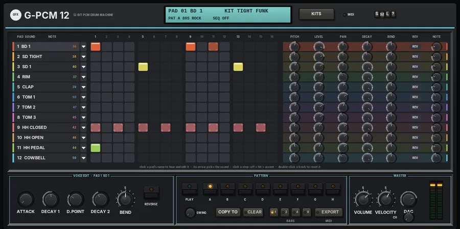

Drum machines at a glance
Four rhythm machines with built-in sequencers, from synthesis kits to 12-bit PCM and preset rhythm boxes. Click a plug-in for its panel; each one has its manual PDF and a download.
| Plug-in | In the spirit of | Main features | Best for |
|---|---|---|---|
 G PulsePanel G PulsePanel | Virtual analog, FM and physical-model drum synthesis |
| Electronic kits of every flavour |
 G Deep 16Panel | House-era rhythm composers |
| Deep house and garage grooves |
 G PCM 12Panel | Mid-80s 12-bit PCM drum machines |
| Gritty 80s digital drums |
 G ClockworkPanel G ClockworkPanel | Late-70s preset rhythm boxes |
| Vintage rhythm-box grooves and percussion |